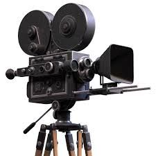

Vida
Biografía
Thomas Alva Edison nació el 11 de febrero de 1847 en Milan, Ohio, Estados Unidos. Fue el séptimo hijo de Samuel Edison Jr. y Nancy Matthews Elliott. Durante su infancia, Edison mostró un gran interés por la ciencia y la experimentación, realizando numerosos experimentos en el sótano de su hogar.
A los 16 años, Edison se convirtió en un vendedor ambulante de periódicos y productos químicos en el ferrocarril, lo que le permitió financiar su laboratorio improvisado y continuar sus experimentos. Su pasión por la ciencia y la inventiva lo llevó a obtener su primera patente en 1868, a los 21 años, por su invento de un registrador eléctrico para el voto en el Congreso.
A lo largo de su vida, Edison registró más de 1,000 patentes en una amplia variedad de campos. Algunas de sus invenciones más notables incluyen el fonógrafo, la bombilla incandescente, el sistema de distribución eléctrica, la cámara de cine y la batería alcalina.

Edison también fue un empresario exitoso. En 1878, fundó la Edison Electric Light Company, que más tarde se convirtió en General Electric, una de las compañías más importantes en el campo de la tecnología y la energía. Su enfoque se centró en la aplicación práctica de la ciencia y la creación de productos comercialmente viables.
A lo largo de su vida, Edison enfrentó numerosos desafíos y fracasos. Sin embargo, su perseverancia y dedicación lo llevaron a convertirse en uno de los inventores más influyentes de la historia. Sus contribuciones revolucionaron la industria de la tecnología y dejaron un legado duradero en áreas como la iluminación, el sonido, el cine y la energía.

Thomas Edison falleció el 18 de octubre de 1931 en West Orange, Nueva Jersey, dejando un impacto duradero en el mundo de la innovación y la tecnología. Su vida y trabajo continúan siendo una fuente de inspiración para inventores, emprendedores y científicos hasta el día de hoy.